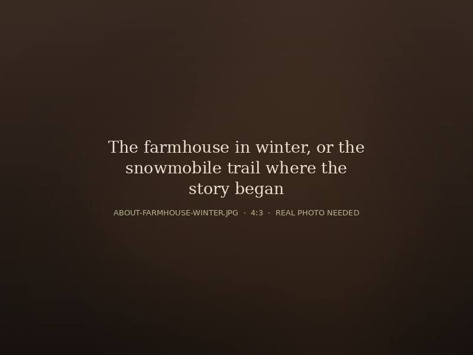
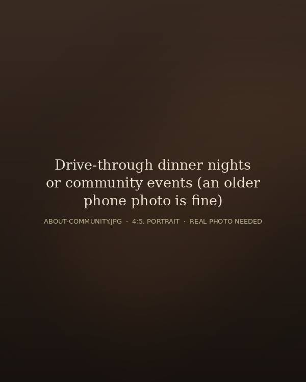
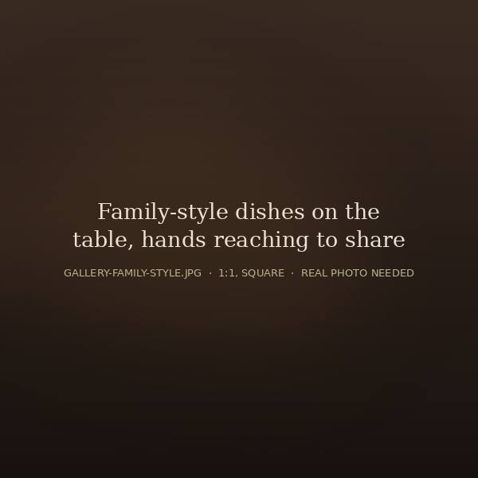

I’ve always loved having people over
I didn’t set out to become a chef, but I’ve always loved hosting dinner parties. Planning the meal, welcoming everyone in and talking around the table were things I happily made time for.
And if you’re wondering about the name, the “babbling” part came quite naturally. I do love a good conversation.


It started with two snowmobilers and a bowl of chili
After I moved to the Ottawa Valley in 2016, two snowmobilers stopped at our farmhouse and asked if we had anything to eat. I gave them chili, and they loved it.
Before long, I was making chili for events at the local rink in Northcote and for the local snowmobile club. One meal led to another, and my love of feeding people began to grow into a business.

The community kept coming back for dinner
When COVID arrived, we started offering drive-through dinners twice a week. We often received 300 orders in a week, and those dinners became an important chapter in The Babbling Gourmet’s story.
The support of our neighbours helped the business take off and become part of the community. It’s something I’m still grateful for.

These days, there are a few ways to join me for dinner
Today, Chef Andi Marcus brings The Babbling Gourmet experience to homes and cottages, welcomes guests to the farmhouse and caters business gatherings and celebrations throughout the Ottawa Valley.
Private chef dinners, intimate farmhouse gatherings and smaller corporate events are at the heart of what we do. Each offers the chance to create something personal, from the first conversation about the menu to the meal itself.
The pleasure is still in the hosting
What I enjoy most hasn’t changed. I love making people feel welcome, cooking something they’ll enjoy and seeing them settle in with the people they came with.
Whether I’m in your kitchen or you’re joining us at the farmhouse, I hope you’ll come hungry and feel right at home.